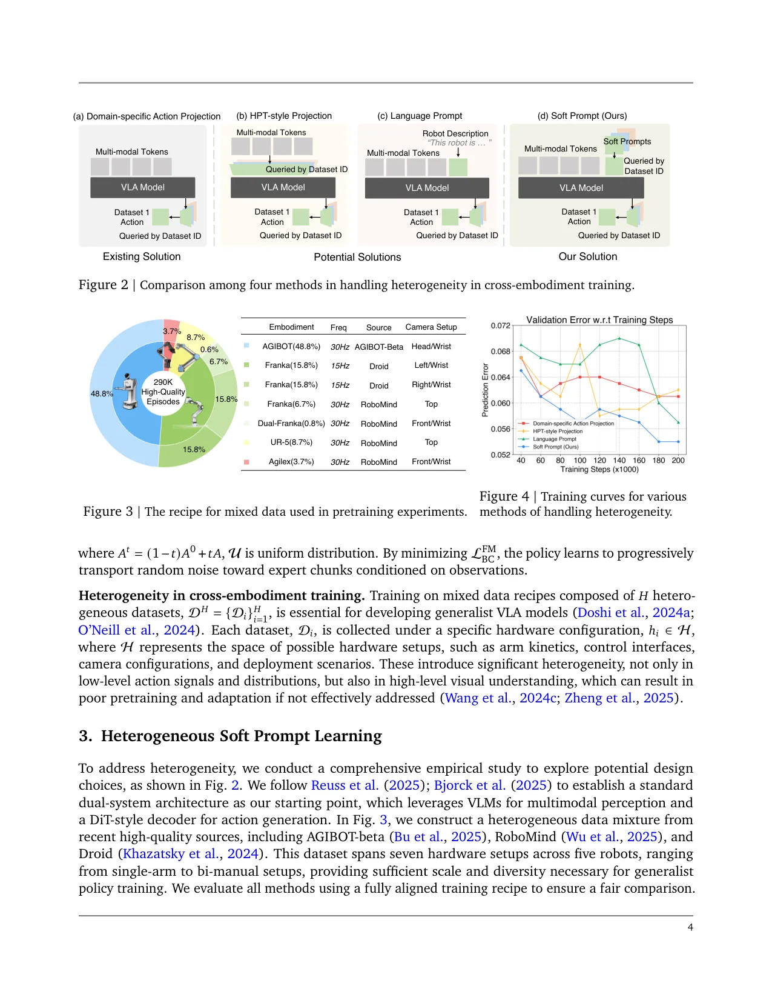
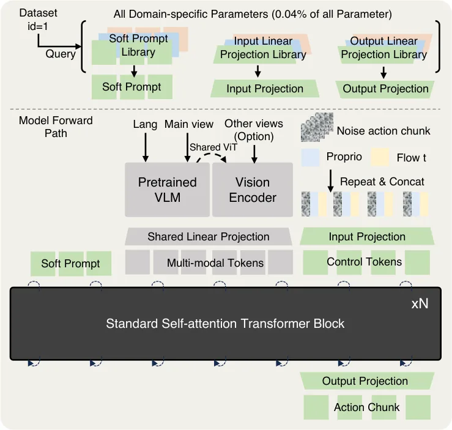
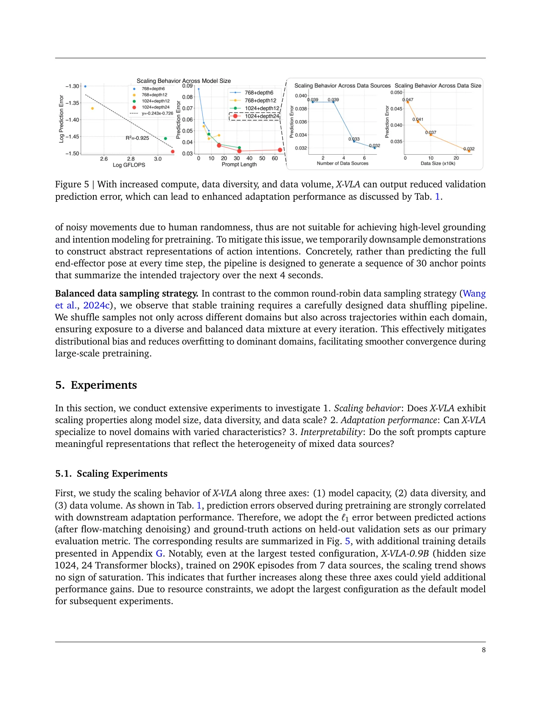
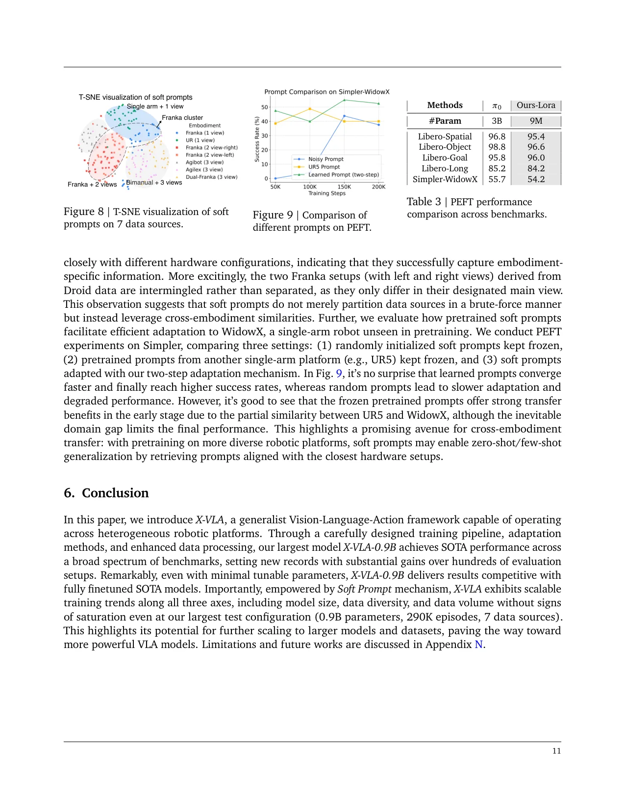

💡速记层 · 思想 / 逻辑 / 方法
默认读完就走的一层——只讲思想、逻辑、方法；效果只作验证。要核对原文/钻细节再看下面的「深读层」。
- 跨本体数据集存在多维异构性：不只是动作空间不同，相机设置、控制频率、任务分布也各异——现有方法只在最终动作头上做区分，远远不够。
- NLP 的 prompt tuning 证明：用少量可学习嵌入就能将大型预训练模型导向特定分布，无需修改主干权重——这种思路可以迁移到跨本体问题。
- 于是把"每个硬件配置 ≈ 一个任务"，给每个数据源分配独立的 soft prompt 嵌入注入编码早期，骨架保持通用 Transformer——只有提示感知 embodiment，骨架不用感知。
- 流匹配（flow matching）action head 处理连续动作生成，提示提供条件信息——两者天然兼容，不需要离散 token 或额外解码器。
- 验证手段：预训练验证误差与下游适配成功率高度相关（R²=0.925）——所以可以用验证误差作为跨架构对比的代理指标，大幅减少全量评测开销。
在 6 个仿真 benchmark（5 个创 SOTA）+ 3 个真实机器人平台全面超越所有对比方法（含 3B π0、7B OpenVLA）。最重要的消融是：加 soft prompt 后预训练验证误差从 0.053 降至 0.041，下游适配从 64.6% 升至 73.8%——与其他"对齐异构性"方法相比增益最大。Scaling 曲线在 0.9B + 290K ep + 7 个数据源处仍无饱和迹象。
想看具体数字（点开）
- Simpler-WidowX：X-VLA 95.8% vs. SOTA 71.9%（7B 模型）——以 0.9B 大幅超越 7B 对手。
- LIBERO 平均：98.1%（Spatial 98.2% / Object 98.6% / Goal 97.8% / Long 97.6%）。
- CALVIN ABC→D：4.43 consecutive tasks（次于 FLOWER 的 4.53）。
- NAVSIM PDMS：87.3 vs. UniVLA 81.7。
- Cloth-folding（Agilex 双臂）：~100% 成功率，33 fold/小时，相当于闭源 π0-folding。
- LoRA PEFT（9M 参数）：Libero 93%、Simpler-WidowX 54%，相比 π0(3B) 完整微调的 94%/55.7% 仅差 1-2%。
- Scaling: 验证误差与下游成功率强相关，R²=0.925。
Track A（移动操作 VLA）直接命中：X-VLA 是目前最简洁、最易复现的跨本体 VLA 基础模型之一。Soft prompt 机制可直接套用于多机器人/多场景混合训练。代码与权重全部 Apache-2.0 开源，可基于 HF checkpoint 直接微调。Track B（足式控制算法）不相关——本文不涉及 locomotion 底层控制，但若要将 VLA 扩展到足式操作臂，soft prompt 的跨本体思路值得参考。
◆核心观点 · 证据
每条 = 中文论点 + 📍页/节 + 🔤逐字原文(Ctrl-F 锚点) + 🀄译文 + 💡解读。
A key challenge here is that VLA models face substantial heterogeneity from hardware configurations to data collection strategies. Such heterogeneity manifests not only in embodiment-specific action spaces, but also in setup variations such as camera settings, visual domains, and task distributions. These various dimensions of diversity induce severe distributional shifts as well as significant semantic misalignments across embodiments, confusing the model and ultimately leading to unsatisfactory pretraining and adaptation performance.
Existing VLA methods primarily assign distinct action decoder heads to accommodate embodiment-specific action spaces as their main focus, with other critical sources of heterogeneity ineluctably overlooked.

we investigate a soft-prompt method that follows the meta-learning and multi-task learning philosophy by introducing domain-specific learnable parameters P_H = {p_i}_i=1^H to absorb heterogeneity across data sources. p_i is expected to encode the underlying hardware configuration: p_i ≈ Φ(h_i), where Φ : H → R^k denotes a latent mapping from hardware configurations to the prompt space. Notably, Φ is not predefined by hard templates as in language prompts (c) but is randomly initialized and then implicitly optimized through end-to-end training.

HPT-style projection introduces different projection layers in the middle of the observation processing, which frequently alter feature distributions and are prone to corrupting pretrained VLM representations, often resulting in unstable training dynamics. Language prompts, on the other hand, rely on carefully scripted textual descriptions of hardware configurations, which greatly hinder adaptability and scalability in practice. In contrast, soft prompts offer a flexible and scalable solution for encoding domain-specific hardware configurations. They marry the advantages of both (b) and (c), integrating smoothly with the backbone while preserving pretrained representations and eliminating the need for handcrafted annotations.
naively training on heterogeneous data leads to degradation. Also, as the validation error decreases during PT, the AD success rate increases progressively, demonstrating a strong correlation between the two. Therefore, we use the validation error as a proxy for PT performance throughout this paper. It is evident that every component in Section 4 contributes to positive improvements for PT.

Notably, even at the largest tested configuration, X-VLA-0.9B (hidden size 1024, 24 Transformer blocks), trained on 290K episodes from 7 data sources, the scaling trend shows no sign of saturation. This indicates that further increases along these three axes could yield additional performance gains.

Fig. 8 reveals that the prompts form well-structured clusters that align closely with different hardware configurations, indicating that they successfully capture embodiment-specific information. More excitingly, the two Franka setups (with left and right views) derived from Droid data are intermingled rather than separated, as they only differ in their designated main view. This observation suggests that soft prompts do not merely partition data sources in a brute-force manner but instead leverage cross-embodiment similarities.
By tuning only 1% of the model parameters (9M), X-VLA-0.9B achieves 93% success rate on LIBERO and 54% on Simpler-WidowX, which is comparable to π0 (Physical Intelligence et al., 2025), despite requiring 300×fewer parameters (3B vs. 9M).
Leveraging this dataset for adaptation, our X-VLA-0.9B model achieves a throughput of nearly 100% success rate and 33 completed folds per hour—comparable to the closed-source π0-folding model (Physical Intelligence et al., 2025), which is presumably trained on substantially larger and higher-quality datasets. For a fair comparison, we finetuned π0-base and trained a ACT (Zhao et al., 2023) model from scratch on Soft-Fold, but they failed to match the throughput of X-VLA-0.9B.
⎘开源状态 实时核查 · 2026-06
STEP 0 实时检查结果：代码、权重均已开源（Apache-2.0）；Soft-Fold 数据集计划开放；预训练数据本身是公开数据集（Droid/RoboMind/Agibot）。
- 代码
- 已开源 github.com/2toinf/X-VLA（Apache-2.0；669★；含训练/推理/评测脚本；train.py · peft_train.py · deploy.py · 多 benchmark 评测）
- 权重
- 已开源 HuggingFace 2toINF/X-VLA 系列：X-VLA-Pt（预训练基础）· X-VLA-SoftFold · X-VLA-RoboTwin2 · WidowX · Franka · Agibot 等多个域特化版本；0.9B F32 safetensors；支持
AutoModel.from_pretrained - 数据
- 部分开源 预训练所用数据（Droid / RoboMind / Agibot-Beta）均为公开数据集；Soft-Fold 布料折叠数据集（1200 episodes）论文承诺开放（"we will release the dataset"），截至 2026-06 仍在处理中
代码组织清晰，包含针对 LeRobot/HDF5/散射轨迹格式的数据集 handler，配合 FastAPI 推理服务端。HF 格式转换注意事项：官方提示"HF 格式存在约 1% 性能损失，正在排查"，推荐使用原生 repo 的 checkpoint 而非 HF 端口进行精确复现。
Importantly, we will release the dataset to facilitate future research in dexterous manipulation.
⚖批判 · 评级
1. 想法极简但效果极强：soft prompt 的新增参数不到 0.04%，却在多维异构性问题上大幅胜过同类设计——这是"以最小改动撬动最大收益"的范本。2. 评测最全面：6 仿真 benchmark + 3 真实机器人，论文自称"to our knowledge, no prior model has reported such comprehensive evaluation"。3. Scaling 曲线清晰：三轴 scaling 趋势无饱和，给出了明确的"继续扩大训练有收益"的信号。4. 完全开源可用：Apache-2.0 代码 + HF 权重，可立即 LoRA 适配新机器人。
① 部署仍需 embodiment-specific 适配：论文自认"零样本/即插即用部署仍是未解问题"，每个新平台仍需采集少量 demo + 微调。② Scaling 上限模糊：0.9B 是资源约束，并非设计极限，实际 1B+ 时 soft prompt 是否仍稳定是开放问题。③ 监督信号单薄：低维动作标签信息量有限，论文自承"下采样意图抽象仅部分解决"，缺乏 3D/物理/子目标等丰富监督。④ Soft-Fold 数据未释：布料折叠这一核心 dexterous task 的数据集尚未正式开放，复现受限。⑤ CALVIN 成绩次于 FLOWER：4.43 vs. 4.53，在长序列基准上仍有差距。
评级：Important 方法优雅简洁且高度实用；在跨本体 VLA 训练这一核心挑战上提供了当前最好的公开方案之一；但尚未突破"需要新 embodiment 适配"的根本限制，距"Breakthrough"差一步。